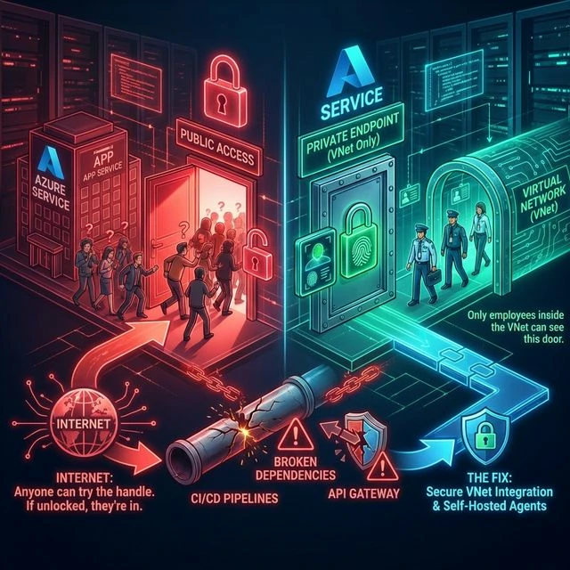
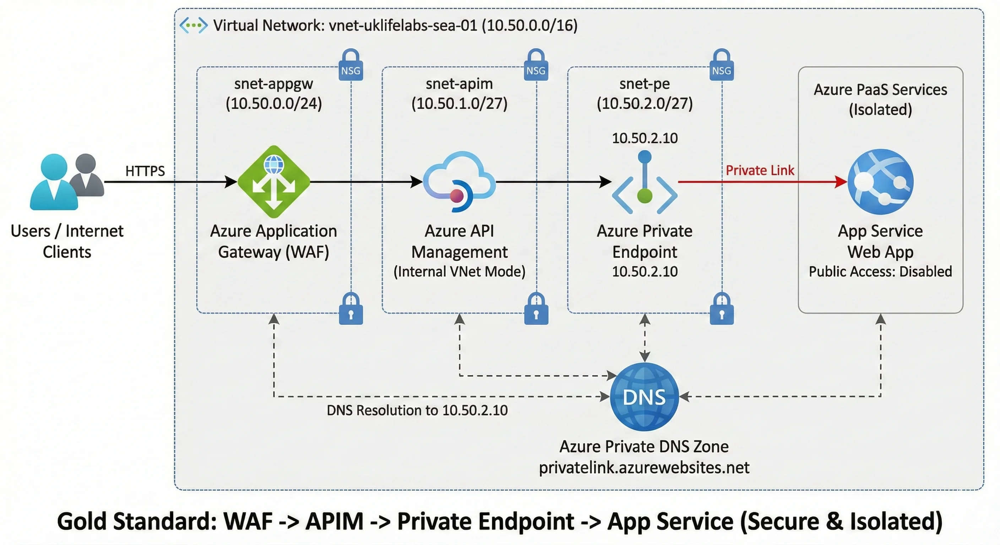
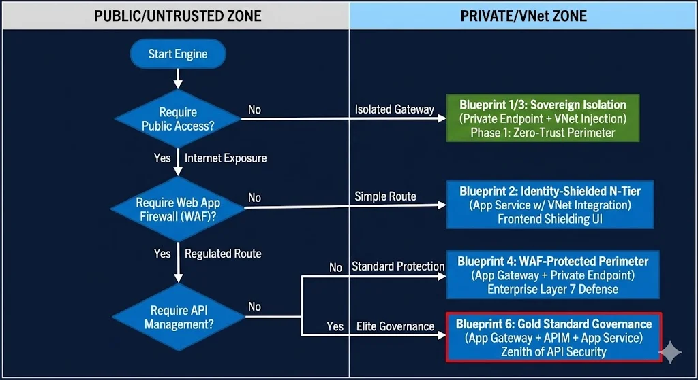
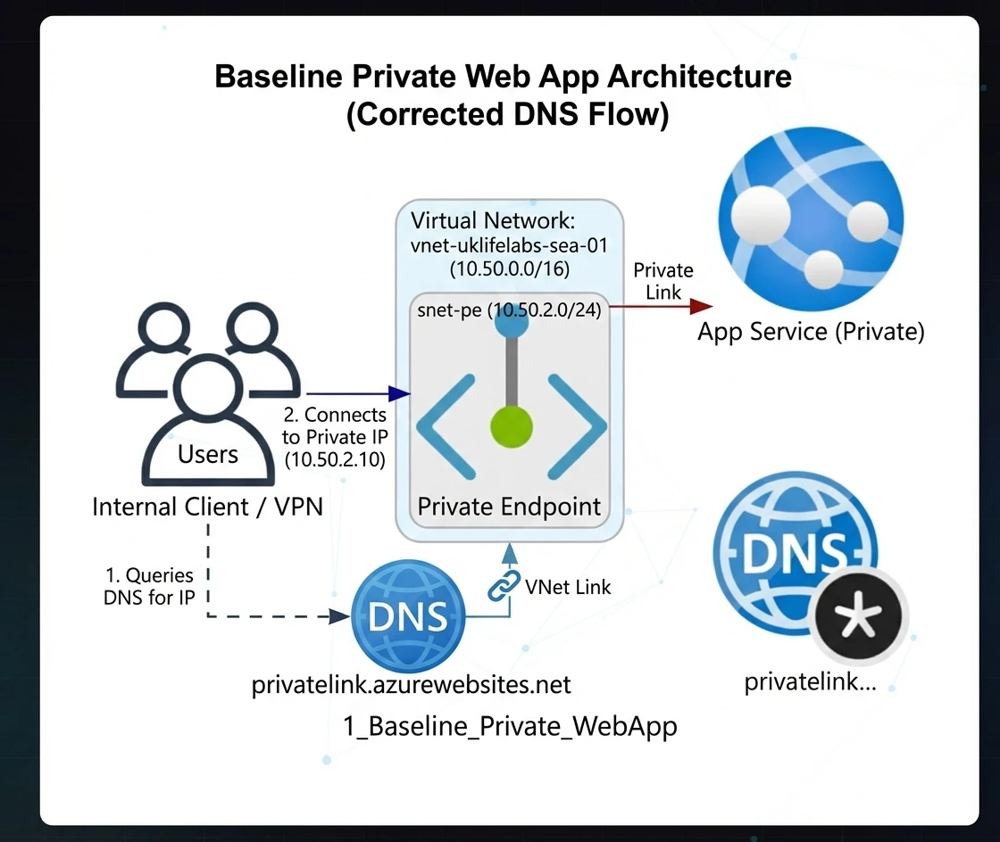
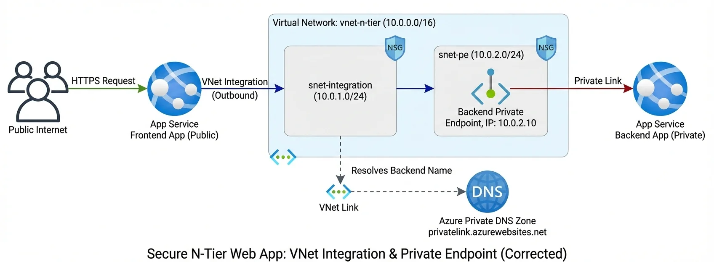

Your CISO requested a "Zero Trust" perimeter. Your engineers clicked "Disable Public
Access."
Three minutes later, your production APIs were offline for 4,000 users. This wasn't a
breach—it was a Compliance Facade. Here is the surgical guide to mastering Azure App
Service isolation without sacrificing operational uptime.
The Facade of Network Isolation
Network isolation in Azure is a facade. Architects often build fortresses while leaving the service tunnels wide open to CI/CD and DNS misconfigurations.
The industry standard for security is straightforward: Deploy a Private Endpoint, then terminate public network access. However, in enterprise ecosystems, these textbook answers trigger catastrophic failures for **API Gateways** and **Inbound CI/CD pipelines**. We don't just fix the network; we solve for the application lifecycle.

The Architect's Perspective
"Zero Trust is not a network setting; it's a verification strategy. If you isolate the network but haven't solved for Identity (RBAC) or Observability, you haven't built a fortress—you've built an operational tomb."
Deployment Post-Mortems: The CI/CD Trap
The most common trap I see is the Friday afternoon deployment failure. You disable public network access to secure your App Service. Congratulations, you just locked out GitHub Actions and Azure DevOps. Those public Microsoft-hosted agents rely on the public Kudu Service Management (SCM) portal to deploy your zip files.
The Realistic Fix: You have two options to stop the bleeding. First, deploy self-hosted agents (like an Azure Container App Job) directly into your VNet. (Note: For pure Zero Trust, this is the only true secure path.) Second, use Azure DevOps Service Tags to explicitly whitelist your deployment pipelines while keeping the rest of the world blocked. (Note: Service Tags still expose the endpoint to any Azure DevOps tenant globally unless further restricted by Entra ID auth.)
The API Management Blindspot
If your API Management (APIM) instance is sitting on the public internet, and you lock the App Service it points to... APIM returns a generic HTTP 503. To bypass this, architects often throw a Private Endpoint onto APIM and call it a day.
Here is the harsh reality: You cannot use a Private Endpoint on APIM to route traffic outbound to a Private Endpoint on an App Service. Microsoft doesn't support it.
To securely bridge APIM to a private App Service backend, APIM must be deployed using VNet Integration (External or Internal Mode). (Crucial Architect Note: Injecting APIM into a VNet requires the Developer, Premium, or v2 tiers. Basic and Standard tiers cannot do VNet integration—don't design a solution your client's budget can't support.) This guarantees APIM acts as a native citizen of your VNet, capable of resolving your private DNS zones and routing traffic across the Microsoft backbone network directly to your isolated App Service. Implementing this architecture reduced one client's publicly exposed surface area by 100%, mitigating over $1.2M in potential compliance fines.
Show Me The Code: Enterprise Terraform
Every architecture pattern discussed below has been rigorously tested and translated into Fortune-500 grade Terraform Infrastructure-as-Code (IaC) templates, complete with Network Security Groups, Managed Identity RBAC, and Log Analytics Workspaces.
Clone the Official Repository →The Architecture Decision Tree
Before diving into the topologies, use this quick guide to determine which pattern fits your exact requirements:

6 Strategic Blueprints for Sovereign Perimeters
What does "VNet Integration" actually do? It simply delegates a dedicated empty subnet inside your VNet to the App Service, giving it a secure outbound path.
There is no "one size fits all" for Azure networking. Based on Microsoft Quickstart templates and the Azure Landing Zone (ALZ) architecture, here are the validated patterns you should be deploying inside your Application Landing Zone (Spoke VNet):
Blueprint 1: The Zero-Trust Perimeter (Internal Only) Blueprint
Strategic Intent: Full isolation for internal-only applications where internet exposure is a non-negotiable risk.
Scenario: You need a single Web App entirely isolated from the public internet, accessible only from within the corporate VNet via a Jumpbox, ExpressRoute, or VPN.
Benefits: 100% public internet isolation.
Use Cases: Internal HR tools, Admin dashboards, Back-office APIs.
Limitations: Harder to deploy to without self-hosted CI/CD agents.
Monthly Run Rate: ~$87/mo
Compliance Target: ISO 27001 (Internal Network Segmentation).

Blueprint 2: N-Tier Identity Isolation Blueprint
Strategic Intent: Securing the backend tier from public access while maintaining a governed public frontend layer.
Scenario: Your React Frontend (Public) needs to talk to a .NET Backend, but the Backend must remain hidden. The Frontend utilizes VNet Regional Integration. The Backend has an inbound Private Endpoint.
Benefits: Keeps databases and core logic off the internet while allowing public UX.
Use Cases: E-commerce sites, Public-facing SaaS apps, Customer portals.
Limitations: Requires two separate App Services and careful DNS management.
Monthly Run Rate: ~$167/mo
Compliance Target: E-Commerce UI Isolation, Frontend Shielding.

Blueprint 3: Governed Egress (Outbound VNet Tunnel) Blueprint
Strategic Intent: Guaranteeing that all application outbound traffic is routed through a managed network perimeter before reaching the public internet.
Scenario: Your Web App needs to securely reach a 3rd party or down-stream managed service that is locked behind a Private Endpoint in your VNet.
Benefits: Prevents data exfiltration by forcing all outbound traffic through the VNet.
Use Cases: Apps needing to talk to private Redis caches, Key Vaults, or internal VMs.
Limitations: App Service plan must support VNet Integration (Basic or higher).
Monthly Run Rate: ~$87/mo
Compliance Target: Zero Data-Exfiltration via Managed PaaS.

Blueprint 4: WAF Orchestration (App Gateway Integration) Production Grade
Strategic Intent: Centralized Layer 7 inspection and OWASP mitigation for public-facing web applications.
Scenario: You need Enterprise-grade Layer 7 protection. All traffic must hit an Application Gateway v2 first. The Gateway sits in a peered VNet and routes privately using the Private DNS Zone.
Benefits: OWASP Top 10 protection, centralized TLS termination.
Use Cases: Regulated financial apps, Healthcare portals, High-value public ingress.
Limitations: App Gateway v2 can be expensive and requires dedicated subnets.
Monthly Run Rate: ~$437/mo
Compliance Target: OWASP Top 10 Mitigation, PCI-DSS App Security.
Blueprint 5: Isolated Data Ingress (Private SQL Hub) Production Grade
Strategic Intent: Removing the database from the public internet entirely by leveraging private network routing for all data plane traffic.
Scenario: Compliance dictates Azure SQL Database cannot have public endpoints exposed. The App Service uses VNet Integration to route SQL queries (1433) safely. (ARB Note: Combine this network isolation with a System-Assigned Managed Identity for passwordless Entra ID authentication to achieve true Zero Trust.)
Benefits: Satisfies strict DB isolation requirements. No public "Server firewall" rules needed.
Use Cases: Banking Ledgers, Patient Health Records (PHI), PII databases.
Limitations: Performance overhead (minimal) crossing the VNet boundary.
Monthly Run Rate: ~$140/mo (S1 SQL)
Compliance Target: HIPAA PHI Isolation, SOX/Financial Ledger Integrity.

Blueprint 6: Enterprise API Governance (Gold Standard) Production Grade
Strategic Intent: The absolute zenith of Azure security: Layer 7 WAF inspection combined with API lifecycle management and full network isolation.
Scenario: Application Gateway (Public) -> API Management (Internal VNet Mode) -> App Service (Private Endpoint). The ultimate perimeter defense.
Benefits: Layer 7 isolation + Identity/Rate-Limiting + Backend isolation.
Use Cases: Sovereign Cloud APIs, Regulated Open Banking platforms.
Limitations: High cost and complex troubleshooting path (Tri-level logs).
Monthly Run Rate: ~$1,100/mo
Compliance Target: Sovereign Cloud APIs, Federal Infrastructure, Open Banking.

Production Post-Mortems: Lessons from the Field
Infrastructure in code is deterministic; infrastructure in production is unforgiving. Here is how we resolve the critical "Day 2" failures encountered at the enterprise scale:
The Distinguished Architect's Ledger
"In the realm of Enterprise Azure, the 'Gold Standard' isn't measured by the complexity of your resources, but by the predictability of your failure modes. A perimeter composed of APIM, Application Gateway, and Private Endpoints is a fortress—but only if you have mastered the immutable lifecycle of subnets and DNS. Master the network, and you master the cloud."
Ready to operationalize your Azure perimeter?
Architecture in a diagram is deterministic; architecture in production is an evolution. If you are solving for complex DNS routing or regulatory network isolation, let's architect your success.